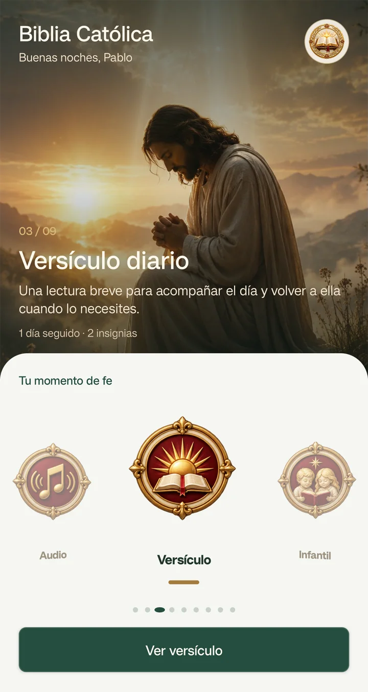
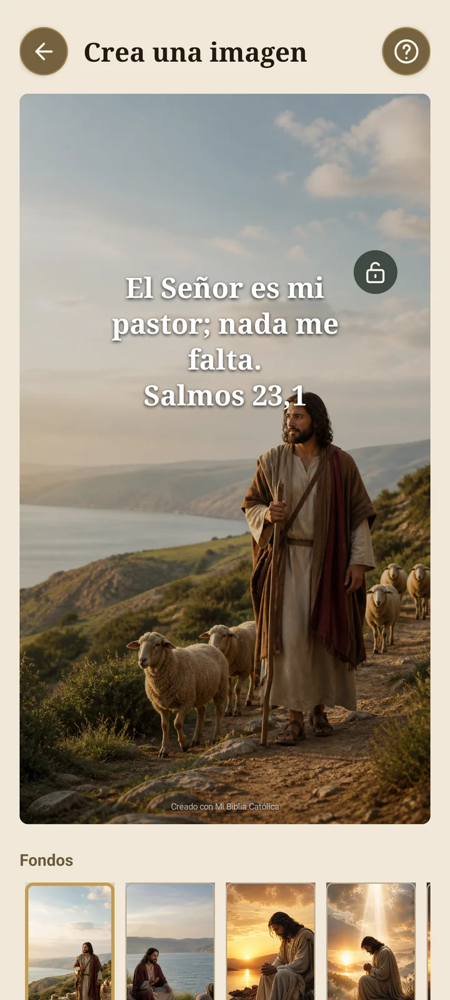
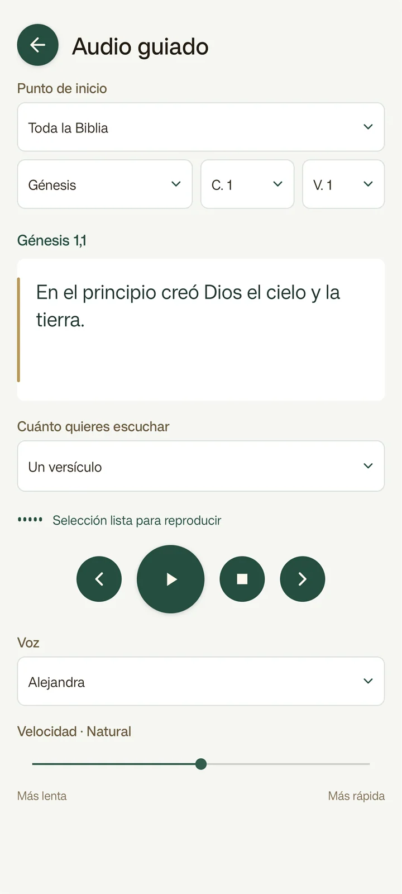
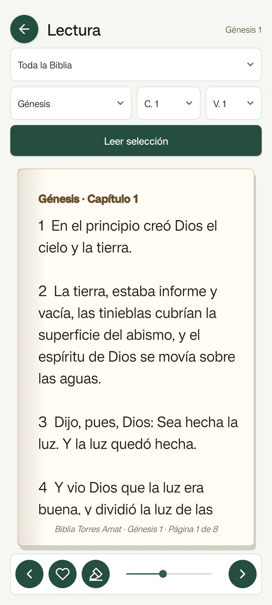
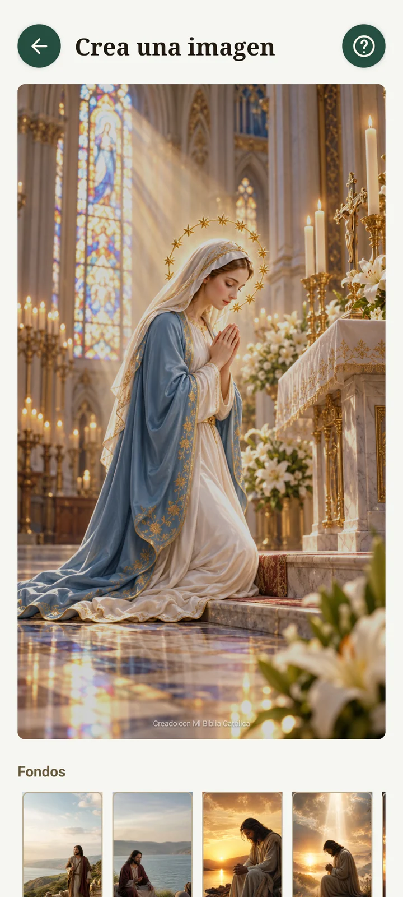
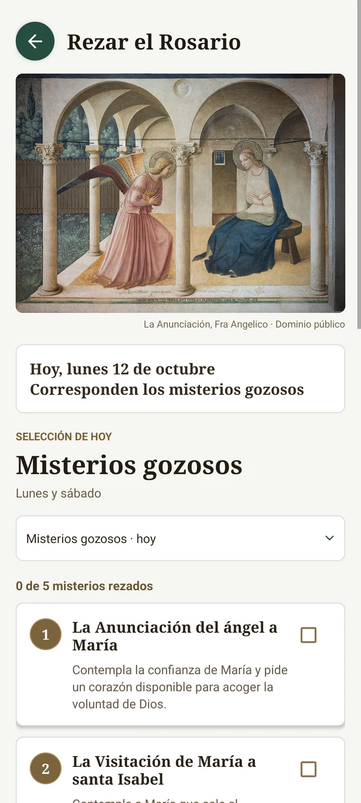
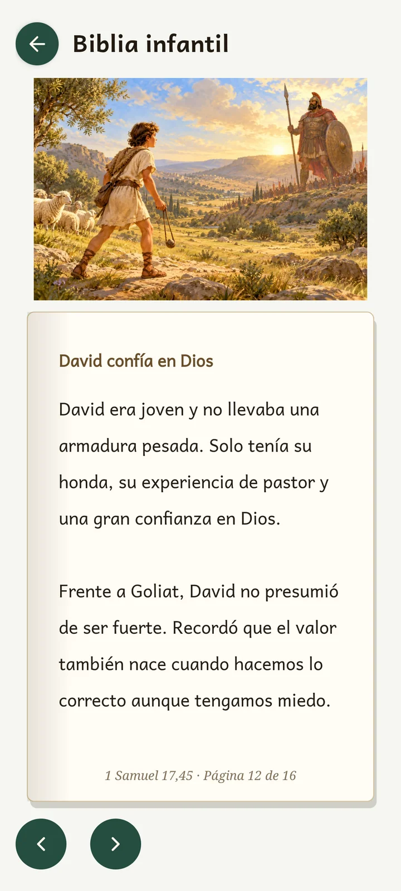

La Biblia completa
73 libros de la traducción Torres Amat. Selecciona un libro, capítulo y versículo; continúa donde lo dejaste y ajusta el tamaño de lectura.
Un lugar tranquilo para leer, escuchar y conectar con tu fe. La Biblia completa, la oración y la inspiración para cada día, en una sola aplicación.
Ya disponible en Google Play · Android


MUCHO MÁS QUE LEER
Desde un versículo al despertar hasta una lectura pausada al final del día. Elige cómo quieres acercarte a la Palabra.
73 libros de la traducción Torres Amat. Selecciona un libro, capítulo y versículo; continúa donde lo dejaste y ajusta el tamaño de lectura.
Escucha un versículo, un capítulo o una selección más amplia. Elige entre las voces disponibles y ajusta la velocidad de narración.
Una breve lectura para acompañarte. Las notificaciones son opcionales y tu constancia se refleja en rachas e insignias.
Once oraciones para leer o escuchar. Desde los misterios del día, abre los textos y vuelve al Rosario conservando las casillas y tu posición.
16 relatos ilustrados con un lenguaje cercano. Recorre cada historia y pasa las páginas con un gesto sobre el texto o la imagen.
Elige entre 51 fondos o una imagen propia. Añade un versículo, personaliza la frase o guarda el fondo sin texto editable. Ajusta su estilo y comparte el resultado.
ORACIONES · PARA LEER Y ESCUCHAR
Once oraciones incluidas en la app, con buscador, categorías y favoritas. Puedes leerlas o escucharlas con la voz que ya has elegido.
Padre nuestro, Ave María, Gloria, los dos credos, Salve, acto de contrición, Ángel de la guarda, bendición de la mesa y oraciones de la mañana y la noche.
Abre «Oraciones» al final del carrusel de Inicio. Busca por nombre o filtra por categoría. Guarda tus favoritas en una colección independiente de los versículos.
Ajusta la letra de 18 a 32 y recorre el texto completo. El audio utiliza la voz instalada y la velocidad elegidas en Audio; se detiene al abandonar la pantalla.
Desde el Rosario, pulsa el nombre de una oración para abrir su texto. Al volver se mantienen los misterios marcados, la selección y la posición de lectura.
UN VISTAZO POR DENTRO
Pulsa una captura para ampliarla. En móvil puedes deslizar la galería. La apariencia puede variar según la versión y el dispositivo.
Accesos, versículo del día y tu camino de lectura.

Escoge el punto de inicio y la voz que prefieras.

Conserva los pasajes que quieres volver a encontrar.

51 fondos disponibles, con 12 nuevas imágenes religiosas.
GUÍA DE USO
No necesitas una cuenta propia. El perfil, los favoritos, las oraciones guardadas y el progreso se conservan en el dispositivo.
Desliza el carrusel para escoger Biblia, Audio, Versículo, Infantil, Rosario, Favoritos, Subrayados, Crear, Mi camino u Oraciones. Pulsa el botón de la sección seleccionada.
Selecciona libro, capítulo y versículo, y pulsa «Leer selección». Navega entre páginas, ajusta el tamaño del texto y utiliza el corazón, el marcador o el resaltador para conservar tu lectura.
En Audio, escoge dónde empezar y cuánto escuchar. Selecciona una voz, realiza su descarga si se solicita y ajusta la velocidad. Usa reproducir, pausa, detener y avanzar para controlar la sesión.
El Rosario ofrece los misterios del día y enlaces directos a las oraciones. También puedes abrir «Oraciones» desde Inicio, buscar, filtrar por categoría, marcar favoritas y ajustar la letra. Usa el audio para escucharlas. En Infantil, pasa las páginas deslizando sobre el texto o la ilustración.
Elige entre los 51 fondos o selecciona una imagen propia. Añade tu versículo o frase y ajusta su estilo. Desactiva «Incluir texto» para ocultar la frase sin borrarla; vuelve a activarlo para recuperarla. Guarda en la galería, comparte o aplica como fondo. La marca de agua se conserva; el texto que forma parte de algunas imágenes no se puede quitar con este control.
En Inicio, pulsa «Sin anuncios», debajo del botón de la sección elegida. Consulta el precio y confirma la compra única en Google Play. Si ya la tienes, utiliza «Restaurar compras» con la misma cuenta. El acceso de Inicio se oculta al activar la compra; «Mi camino → Privacidad y compras» sigue disponible.

ORACIÓN
Misterios del día, imágenes y seguimiento de la oración para acompañar tu Rosario.
Consulta la guía →
EN FAMILIA
16 relatos para leer juntos, con ilustraciones y textos adaptados. Un gesto permite continuar la historia.
Empieza a explorar →LO MÁS RECIENTE
TUS DATOS, EXPLICADOS
El progreso y las preferencias se conservan localmente. Publicidad, compras y descargas de voz utilizan servicios externos, explicados en la política de la aplicación.
Leer la política de privacidadIndica «Mi Biblia Católica», la versión y el modelo de tu dispositivo.